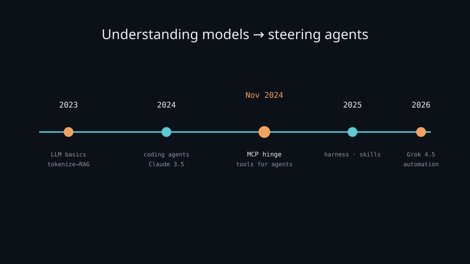

AI timeline — my journey
Journey from 2023 (first LLM exposure) → embedding… → agents → automation, anchored to real AI milestones.
AI timeline — my journey (2023 → present)
Starting point: 2023 — first time learning about LLMs, then background concepts (tokenize, embedding, attention, softmax, RAG). This timeline anchors lab notes to real AI milestones and shows why focus now shifts to agents / automation.
Academic roots (Transformer 2017, BERT 2018, GPT-3 2020) underpin the concepts — see attention.md, embedding.md. My journey starts in 2023.
Why it matters
Concepts and tools arrive in an order that made sense for me. Mapping that order against industry milestones explains why the lab went from fundamentals → RAG → agents — and which older notes still matter.
You can enter the lab at any stage, but the timeline shows why MCP and harness notes sit on top of tokenize/attention rather than replacing them.
Key ideas
- Stage 1 — 2023: first LLM exposure and foundations
- Late 2022 ChatGPT (GPT-3.5) made AI mainstream → 2023 I started learning seriously.
- March 2023 — GPT-4 · Claude 1 · Llama 1; RAG exploded.
- Learned in order: tokenize.md → embedding.md → attention.md → softmax.md.
- Then retrieval: rag.md; train → infer: 06-train-infer.md, train-gpu.md.
- July 2023 — Claude 2 · Llama 2. December 2023 — Gemini 1.0 · Mixtral (MoE open).
- Stage takeaway: without tokenization, vectors, and attention, later “agent” talk is vocabulary without mechanisms. Build the substrate first.
- Stage 2 — 2024: stronger models + early coding agents
- Gemini 1.5 (1M context) · Claude 3 → 3.5 Sonnet (coding jump — Cursor took off) · GPT-4o · Llama 3.1 405B · o1 · DeepSeek V3.
- Shift from reading concepts to using AI to code for real.
- Stage takeaway: long context and coding-specialized models made “pair programmer” practical. The bottleneck moved from “can the model code?” toward “can I steer it in a repo?”
- Stage 3 — late 2024–2025: agent era (MCP · skills · harness)
- Lab pivots to MCP · skills · harness.
- November 25, 2024 — MCP (Anthropic): standard agent ↔ tool connection. Hinge between chatbots and tool-using agents. See mcp.md.
- January 2025 — DeepSeek R1 — 08-model-notes.md.
- February 2025 — Claude 3.7 Sonnet · GPT-4.5. March 2025 — MCP Streamable HTTP + OAuth · Gemini 2.5 Pro.
- May 2025 — Claude 4 → Claude Code as strong harness: 07-agents.md.
- August 2025 — GPT-5. November 2025 — Claude Opus 4.5 · AGENTS.md standard · skills/rules: skills-rules.md.
- Stage takeaway: after MCP, progress is less “new chat UI” and more tools + loop + portable instructions. Harness quality starts to matter as much as model IQ.
- Stage 4 — 2026: model wave + automation (now)
- Focus: 08-model-notes.md, 09-agent-automation.md.
- April 2026 — GPT-5.5. May 28, 2026 — Claude Opus 4.8. June 2026 — Claude Fable 5 · Sonnet 5.
- July 8, 2026 — Grok 4.5 (trained with Cursor): fast, token-efficient, cheap. July 9, 2026 — GPT-5.6.
- Parallel: OpenClaw (
piharness) opens “agent controls everything” → Hermess polishes it. - Stage takeaway: model waves are frequent; keep field notes fresh, but keep pipelines (RAG, train/infer, MCP) stable. Automation (OpenClaw / Hermess) asks: what should run without a human in the loop?
- Milestone table:
| When | Event | In the lab |
|---|---|---|
| 2023 | first LLM exposure (ChatGPT/GPT-4) | start studying |
| March 2023 | GPT-4, Claude 1, Llama 1 | tokenize · embedding · attention · softmax · RAG |
| 2024 | Gemini 1.5, Claude 3.5, GPT-4o, o1 | coding agents |
| Nov 2024 | MCP launches | mcp (hinge) |
| 2025 | Claude 4 / GPT-5 / R1 · AGENTS.md | harness, skills |
| 2026 | Grok 4.5, Opus 4.8, GPT-5.6 | model notes, automation |
- Takeaways (compressed): journey goes from understanding models (2023–2024) → steering agents (late 2024 onward). MCP (November 2024) is the hinge. 2023 concepts are not outdated — tokenize / attention / RAG still underpin every agent. Watch harnesses (Cursor / Claude Code / pi), model waves (Grok 4.5…), automation (OpenClaw / Hermess).
Worked example (how to use this note)
Path A — new to the lab: follow Stage 1 order (tokenize → embedding → attention → softmax → RAG → train/infer). Only then open MCP / agents. When something breaks in an agent app, you will recognize “bad retrieve” or “bad tokenize” instead of blaming the harness.
Path B — already building agents: start at mcp.md + skills-rules.md + 07-agents.md, but keep Stage 1 notes as the substrate. Example: agent “can’t find docs” → check embedding/RAG notes before swapping models.
Path C — catching up on 2026: skim Stage 4 + 08-model-notes.md / 09-agent-automation.md, then decide whether your bottleneck is model, harness, or automation scope — the timeline’s point is that these are different layers.
MCP hinge check: if your stack still treats tools as one-off plugins with no shared protocol, you are pre-hinge mentally — read mcp.md even if your editor already “has tools.”
Common pitfalls
- Skipping foundations because “agents are the new thing” — bad retrieve / bad tokenize still break agent apps.
- Treating every model launch as a full rewrite — update field notes; keep pipelines stable.
- Timeline as dogma — this is my path; yours may start at RAG or harnesses.
- Collapsing model vs harness vs automation into one upgrade — swap one layer at a time.
Illustrations



Deeper dive
- Why Nov 25, 2024 is the hinge: before MCP, every product reinvented tool schemas. After MCP, skills/harnesses can share a connector language — lab notes shift from “how does GPT work?” to “how does the agent get arms?” (mcp.md).
- Foundations still fire in agent bugs: wrong chunking → bad RAG → confident wrong tool args. Attention/softmax notes explain why prompts and logits behave; they are not nostalgia.
- Coding-agent jump (2024): Claude 3.5 + Cursor made repo-native edit loops mainstream. That prepared the ground for harness comparison in 2025 — once everyone could code with AI, orchestration became the differentiator (07-agents.md).
- Skills / AGENTS.md (late 2025): portable instructions reduce re-prompting. They sit above models: same skill file, different brains (skills-rules.md).
- 2026 model wave discipline: Grok 4.5 / Opus 4.8 / GPT-5.6 arrive close together — update 08-model-notes.md, don’t rewrite RAG or train pipelines for each launch.
- Automation layer: OpenClaw → Hermess is about unattended loops. Ask what must stay human-approved (prod deploys, secrets) vs what can run on a schedule (09-agent-automation.md).
- How to read industry news with this timeline: classify each headline as foundation science, model release, protocol/harness, or automation product — then open the matching lab note instead of doomscrolling.
Decision guide
| Situation | Prefer | Avoid / why |
|---|---|---|
| Brand new to LLMs | Stage 1 path (tokenize → … → RAG) | Jumping straight to multi-agent automation — no substrate |
| Shipping tool-using agents | MCP + skills + harness notes (Stage 3) | Treating ChatGPT plugins as “done” without a protocol story |
| “Which model this week?” | Update 08-model-notes.md; pin for the task | Rewriting the whole lab stack per launch |
| Agent fails on retrieval-heavy tasks | Revisit embedding / RAG / semantic-search notes | Only swapping to a bigger chat model |
| Want unattended runs | 09-agent-automation.md + clear approvals | Giving a harness prod credentials “to try OpenClaw” |
| Confused model vs harness pain | Read 07-agents.md axes first | Blaming Grok/Opus for missing shell/MCP |
Slides & demo
| Link | |
|---|---|
| Slides | slides/ai-timeline |
| Related | Hermess slides |
Related
- 07-agents.md, 08-model-notes.md, 09-agent-automation.md, mcp.md
- Foundations: tokenize.md, embedding.md, attention.md, rag.md